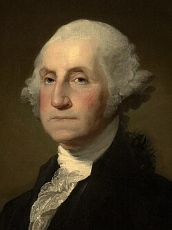
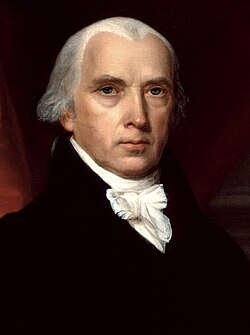
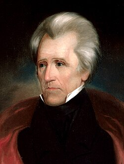
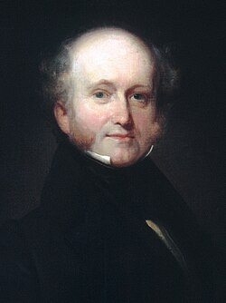
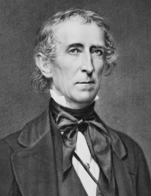

| No | Portrait | Name | Term | Party | Election | Vice President |
|---|---|---|---|---|---|---|
| 1 |  |
George Washington | April 30, 1789 to March 4, 1797 | Unaffiliated | 1789, 1792 | John Adams |
| 2 | John Adams | March 4, 1797 to March 4, 1801 | Federalist | 1796 | Thomas Jefferson | |
| 3 | |
Thomas Jefferson | March 4, 1801 to March 4, 1809 | Democratic-Republican | 1800, 1804 | Aaron Burr, George Clinton |
| 4 |  |
James Madison | March 4, 1809 to March 4, 1817 | Democratic-Republican | 1808, 1812 | George Clinton, Elbirdge Gerry |
| 5 | |
James Monroe | March 4, 1817 to March 4, 1825 | Democratic-Republican | 1816, 1820 | Daniel D. Tompkins |
| 6 | John Quincy Adams | March 4, 1825 to March 4, 1829 | Democratic-Republican, National Republican | 1824 | John C. Calhoun | |
| 7 |  |
Andrew Jackson | March 4, 1829 to March 4, 1837 | Democratic | 1828, 1832 | John C. Calhoun, Martin Van Buren |
| 8 |  |
Martin Van Buren | March 4, 1837 to March 4, 1841 | Democratic | 1836 | Richard Mentor Johnson |
| 9 | |
William Henry Harrison | March 4, 1841 to April 4, 1841 | Whig | 1840 | John Tyler |
| 10 |  |
John Tyler | April 4, 1841 to March 4, 1845 | Whig, Unaffiliated | N/A | Vacant throughout presidency |